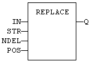
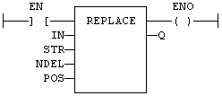

Function
Replace characters in a string.
|
Name |
Type |
Description |
|
IN |
STRING |
Character string. |
|
STR |
STRING |
String containing the characters to be inserted in place of NDEL removed characters. |
|
NDEL |
DINT |
Number of characters to be deleted before insertion of STR. |
|
POS |
DINT |
Position where characters are replaced (first character position is 1). |
|
Name |
Type |
Description |
|
Q |
STRING |
Modified string. |
The first valid character position is 1. In LD language, the operation is executed only if the input rung (EN) is TRUE. The output rung (ENO) keeps the same value as the input rung. In IL, the first input (the string) must be loaded in the current result before calling the function. Other arguments are operands of the function, separated by comas.
Q := REPLACE (IN, STR, NDEL, POS);

The function is executed only if EN is TRUE.
ENO keeps the same value as EN.
